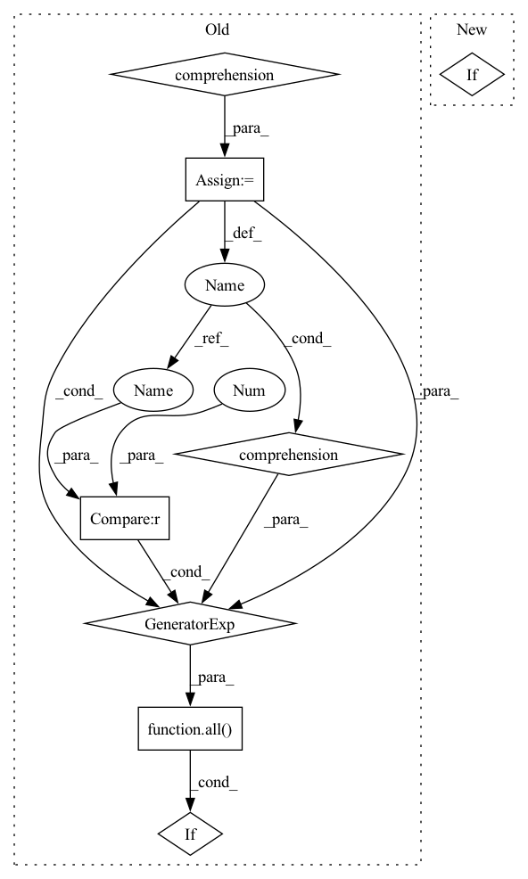

Pattern ID :21870
Before Change
poses[object_id] = pp.get_pose(object_id)
translations = collections.defaultdict(float)
num_paused = {
object_id: 0
for object_id in self.object_ids
if object_id != self.target_object_id
}
def step_callback():
for object_id in self.object_ids:
if object_id == self.target_object_id:
continue
pose = pp.get_pose(object_id)
d_translation = np.linalg.norm(
np.array(poses[object_id][0]) - np.array(pose[0])
)
translations[object_id] += d_translation
if d_translation < 0.0001:
num_paused[object_id] += 1
else:
num_paused[object_id] = 0
poses[object_id] = pose
for pose in pp.interpolate_poses(
pose1, pose2, pos_step_size=0.001, ori_step_size=np.pi / 180
):
pp.set_pose(self.target_object_id, pose)
pp.step_simulation()
pp.set_pose(self.target_object_id, pose)
step_callback()
if self._gui:
time.sleep(pp.get_time_step())
for _ in range(int(round(10 / pp.get_time_step()))):
pp.set_pose(self.target_object_id, pose)
pp.step_simulation()
pp.set_pose(self.target_object_id, pose)
step_callback()
if self._gui:
time.sleep(pp.get_time_step())
if all(n > 10 for n in num_paused.values()) :
break
for object_id, translation in translations.items():After Change
return z_min >= (self._z_min_init - 0.01)
def step(self, act_result):
if not self.validate_action(act_result):
raise RuntimeError
dx, dy, dz, da, db, dg = action = self.actions[act_result.action]In pattern: SUPERPATTERN
Frequency: 3
Non-data size: 8
Instances Fragment ID: 69687732
Project Name: wkentaro/safepicking
Commit Name: d6e097b7daaa836316bc0951a032e09461ae1d42
Time: 2021-06-11
Author: www.kentaro.wada@gmail.com
File Name: examples/target_pick/env.py
M Class Name: PickFromPileEnv
N Class Name: PickFromPileEnv
M Method Name: step(2)
N Method Name: step(2)
M Parent Class: Env
N Parent Class: Env
M File Name: examples/target_pick/env.py
N File Name: examples/target_pick/env.py
M Start Line: 290
M End Line: 335
N Start Line: 312
N End Line: 315
Before Change
files = sorted(map(lambda x: x.relative_to(current_dir), Path.cwd().rglob("*.py")))
files = list(filter(lambda x: not any([str(Path(ele)) in str(x) for ele in exclude]), files))
return_codes = Parallel(n_jobs=os.cpu_count())(delayed(run_mypy)(file) for file in files)
if all(v == 0 for v in return_codes) :
return 0
else:
sys.stderr.write("mypy failed")After Change
Runs mypy on the files in the argument list, or every *.py file under the current directory if there are none.
current_dir = Path.cwd()
if sys.argv[1:]:
file_list = [Path(arg) for arg in sys.argv[1:]]
else:
// We don"t want to check the files in the submodule if any, partly because they should already have Fragment ID: 69687726
Project Name: microsoft/innereye-deeplearning
Commit Name: 1136e23352ac8b4e93705b96bdac9f08120f8399
Time: 2020-08-14
Author: dacart@microsoft.com
File Name: mypy_runner.py
M Class Name: AnonimousClass
N Class Name: AnonimousClass
M Method Name: main(0)
N Method Name: main(0)
M Parent Class:
N Parent Class:
M File Name: mypy_runner.py
N File Name: mypy_runner.py
M Start Line: 19
M End Line: 31
N Start Line: 52
N End Line: 65
Before Change
poses[object_id] = pp.get_pose(object_id)
translations = collections.defaultdict(float)
num_paused = {
object_id: 0
for object_id in self.object_ids
if object_id != self.target_object_id
}
def step_callback():
for object_id in self.object_ids:
if object_id == self.target_object_id:
continue
pose = pp.get_pose(object_id)
d_translation = np.linalg.norm(
np.array(poses[object_id][0]) - np.array(pose[0])
)
translations[object_id] += d_translation
if d_translation < 0.0001:
num_paused[object_id] += 1
else:
num_paused[object_id] = 0
poses[object_id] = pose
for pose in pp.interpolate_poses(
pose1, pose2, pos_step_size=0.001, ori_step_size=np.pi / 180
):
pp.set_pose(self.target_object_id, pose)
pp.step_simulation()
pp.set_pose(self.target_object_id, pose)
step_callback()
if self._gui:
time.sleep(pp.get_time_step())
for _ in range(int(round(10 / pp.get_time_step()))):
pp.set_pose(self.target_object_id, pose)
pp.step_simulation()
pp.set_pose(self.target_object_id, pose)
step_callback()
if self._gui:
time.sleep(pp.get_time_step())
if all(n > 10 for n in num_paused.values()) :
break
for object_id, translation in translations.items():After Change
return z_min >= (self._z_min_init - 0.01)
def step(self, act_result):
if not self.validate_action(act_result):
raise RuntimeError
dx, dy, dz, da, db, dg = action = self.actions[act_result.action] Fragment ID: 69687725
Project Name: wkentaro/reorientbot
Commit Name: d6e097b7daaa836316bc0951a032e09461ae1d42
Time: 2021-06-11
Author: www.kentaro.wada@gmail.com
File Name: examples/target_pick/env.py
M Class Name: PickFromPileEnv
N Class Name: PickFromPileEnv
M Method Name: step(2)
N Method Name: step(2)
M Parent Class: Env
N Parent Class: Env
M File Name: examples/target_pick/env.py
N File Name: examples/target_pick/env.py
M Start Line: 290
M End Line: 335
N Start Line: 312
N End Line: 315